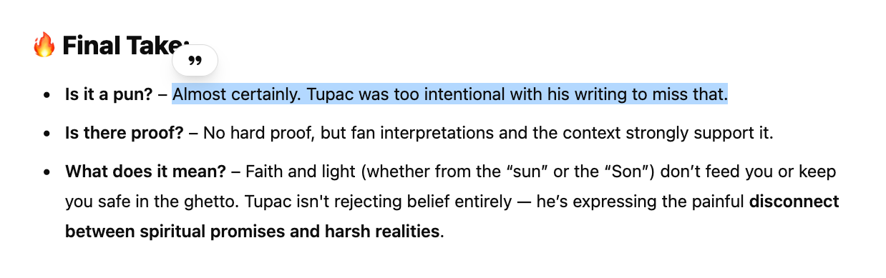

A Literary Analysis of Tupac Shakur
4/14/2025
The Poetic Genius of Tupac Shakur
Tupac Shakur created 10 studio albums in total (he actually recorded something like 700+ songs). The albums he produced when he was alive seemed to each fit a general theme as he matured as a musician and as a person. Here's a brief summary of his first 5 albums:
-
2Pacalaypse Now - First album, NY-style of raw delivery of vocals. Political theme of fighting an oppressive government.
-
Strictly For My N****Z - Still New York-style hiphop, more gangster, street revolutionary.
-
Me Against The World - Possibly his greatest lyrical work. Includes political themes but also includes a retrospective exploration into the spiritual and metaphysical aspect of his experience. Strong themes of struggle and love present.
-
All Eyez On Me - Tupac's best selling album. Adopted west coast style of rap. More gangster and angry than previous albums, but perhaps his most popular.
-
Makaveli: Don Killuminati The 7 Day Theory - Technically released after his death, this album was a revolutionary work of art. Tupac uses an alias of "Makaveli" to question Christionanity, one of the biggest taboo topics of modern music.
This blog post will deep dive into Me Against the World and his Makaveli album, along with other strong themes present in his work.
A Literary Analysis of 'Me Against the World'
Released in 1995 while Tupac Shakur was incarcerated, "Me Against the World" represents a pivotal moment in hip-hop history—a profound introspective journey that showcased Tupac's literary prowess and cemented his legacy as more than just a rapper, but a poet of remarkable depth. This analysis explores the sophisticated literary techniques employed throughout the album, establishing Tupac's place in the broader literary canon.
Alliteration
Tupac used alliteration extensively throughout his work as part of his poetic toolbox, demonstrating his technical skill and creating memorable, impactful verses with distinctive rhythmic qualities. The beginning verse of "If I Die Tonite":
They say p***y and paper is poetry, power and pistols
Plotting on murdering motherfuckers 'fore they get you
Picturing pitiful punk n****s copping pleas
Puffing weed as I position myself to clock G's
Alliteration occurs when a writer or speaker uses multiple words in sequence that begin with the same sound or letter. It's a sound device that creates rhythm, emphasis, and musical quality in language.
Political Alliteration
("Power"/"People"/"Politics") are strong themes in the song "Me Against The World". Individual lines taken from verse 4:
"When will I finally get to rest through this oppression?" "The power is in the people and politics we address" "Politicians are hypocrites, they don't wanna listen"
The Power of Metaphor: Reimagining Reality
Tupac's masterful use of metaphor throughout "Me Against the World" transforms concrete urban experiences into universal human struggles. In tracks like "So Many Tears," Tupac compares life's challenges to a journey through a valley, evoking biblical imagery while creating a powerful metaphorical landscape that captures his emotional state.
From "So Many Tears": "I'm lost and I'm weary, so many tears / I'm suicidal so don't stand near me / My every move is a calculated step / To bring me closer to embrace an early death"
Tupac transforms grief into a metaphysical journey, with "calculated step" suggesting a dance with mortality reminiscent of Emily Dickinson's "Because I could not stop for Death."
Metaphor, the representation of one concept in terms of another, has been used by literary giants from Shakespeare to Morrison to transform understanding. Tupac employs this device to elevate street narratives into profound meditations on mortality, justice, and redemption.
In "Death Around the Corner," Tupac metaphorically depicts his paranoia and premonition of death as a physical stalker, creating a haunting personification that echoes the rhetorical techniques found in classic poetry.
Biblical Allusions: Sacred Texts in Secular Spaces
The album contains numerous biblical references that provide moral weight and historical context to Tupac's personal struggles:
-
Valley of Death imagery: Throughout the album, particularly in "So Many Tears," Tupac alludes to Psalm 23's "valley of the shadow of death," repositioning this biblical journey within the context of urban America.
-
Judas/betrayal motifs: In discussing loyalty and betrayal, Tupac invokes the archetypal betrayal of Christ by Judas, elevating personal experiences to the level of sacred narrative. "Death Around the Corner" personifies death, as if its a person waiting around the corner, signifying his paranoia.
-
Resurrection themes: Tupac frequently references resurrection and rebirth, positioning himself as both prophet and martyr in the tradition of biblical figures.
These biblical allusions connect Tupac's work to a long tradition of African American literature and oratory that has used biblical frameworks to articulate experiences of suffering and hopes for deliverance, from spirituals to Martin Luther King Jr.'s speeches.
Additional Biblical References
Intro of "So Many Tears" "Though I walk through the valley of death" (intro)
Source: Psalm 23:4, Purpose: Frames Tupac as a modern martyr
"Baptized in eternal fire" (Verse 2 of "So Many Tears") Conflates street violence with divine judgment. Judas Betrayal – Distrust of Women
Song: "Temptations" (Verse 4). Lyric: "Don't trust my lady / 'Cause she's a product of this poison"
Biblical Parallel: John 13:21-30: Judas betrays Jesus after sharing bread. Tupac's Twist: Framed as street-era betrayal—women as allegorical "Judas figures" in gang culture.
Parallelism and Anaphora: Rhythmic Reinforcement
Tupac employs parallelism (the repetition of grammatical structures) and anaphora (repetition of beginning phrases) extensively throughout the album. These techniques, which date back to ancient religious texts and classical oratory, create rhythmic emphasis and emotional intensity.
In tracks like "Lord Knows" and the title track "Me Against the World," repeated phrases at the beginning of verses create a sermon-like quality that builds both musical and rhetorical power. This technique connects Tupac's work to both the African American preaching tradition and classical rhetoric used by Shakespeare in famous speeches like Mark Antony's "Friends, Romans, countrymen" address.
Juxtaposition and Antithesis: Embracing Contradiction
One of Tupac's most powerful literary techniques is his embrace of contradiction and opposing forces. Throughout the album, he juxtaposes:
- Hope against despair
- Love against violence
- Spiritual faith against worldly cynicism
- Individual strength against societal oppression
This technique, reminiscent of William Blake's "Songs of Innocence and Experience" and Shakespeare's exploration of duality in characters like Hamlet, allows Tupac to capture the complexity of human existence without simplification.
In "Dear Mama," Tupac creates powerful emotional resonance through the juxtaposition of his mother's struggles with her enduring love, demonstrating how contrast can illuminate deeper truths.
The "Thug Life" tattoo is a juxtaposition as well, with the left being "Thug" and the right being "Life".
Internal Rhyme and Assonance: Sonic Architecture
Tupac's technical mastery extends to his use of internal rhyme (rhymes within lines rather than just at the end) and assonance (repetition of vowel sounds). These devices create complex sonic patterns that enhance meaning while demonstrating technical virtuosity.
These techniques have roots in literary traditions from Shakespeare's iambic pentameter to Gerard Manley Hopkins' "sprung rhythm" to the jazz-influenced cadences of Langston Hughes. Tupac's implementation of these devices creates multilayered poetry that rewards close attention and repeated listening.
Allusion and Intertextuality: Cultural Conversations
Beyond biblical references, "Me Against the World" engages with broader cultural and literary traditions through allusion:
-
Machiavellian references: Tupac's interest in power dynamics and strategic thinking connects to his well-documented fascination with Machiavelli.
-
Shakespearean parallels: The album's exploration of fate, mortality, betrayal, and power dynamics echoes Shakespearean themes from plays like "Macbeth," "Hamlet," and "Julius Caesar."
-
References to Black literary figures: Subtle nods to writers like Richard Wright and Ralph Ellison place Tupac within the African American literary tradition.
These connections reveal Tupac as not merely expressing personal experiences but engaging in a sophisticated dialogue with literary and philosophical traditions.
Tupac and Shakespeare: Unexpected Parallels
While separated by centuries and genres, Tupac and Shakespeare share surprising similarities:
-
Universal through the specific: Both artists address universal human themes through specific cultural contexts.
-
Invented vocabulary: Like Shakespeare, who added hundreds of words to English, Tupac contributed new terms and repurposed existing language.
-
Exploration of duality: Both artists created work that embraces contradictions within human nature.
-
Social commentary: Each used their art to comment on societal power structures while exploring individual psychology.
-
Innovation within form: Both pushed the boundaries of their respective forms while maintaining accessibility.
The comparison is not mere elevation by association—both artists demonstrate how mastery of literary techniques can transform entertainment into enduring art that speaks across generations.
Narrative Techniques: The Power of Storytelling
Throughout "Me Against the World," Tupac employs sophisticated narrative techniques:
-
First-person immersion: Tracks like "It Ain't Easy" use first-person narration to create immediate emotional connection.
-
Stream of consciousness: In more introspective moments, Tupac allows thoughts to flow naturally, revealing psychological depth.
-
Shifting perspectives: The album moves between personal confession, societal observation, and direct address to different audiences.
-
Frame narratives: Several tracks use "framing devices" like spoken introductions that contextualize the verses that follow.
These techniques reveal Tupac's narrative sophistication and connect his work to literary modernism's experiments with perspective and consciousness.
Symbolism: Layers of Meaning
Tupac's use of recurring symbols throughout the album creates cohesion and depth:
- Tears: Representing both vulnerability and emotional authenticity.
- Roses: Used to symbolize beauty emerging from difficult circumstances.
- Urban landscapes: Physical environments that function as psychological states.
- Light and darkness: Traditional symbolism repurposed for contemporary contexts.
This symbolic network connects individual songs into a larger artistic statement, demonstrating Tupac's ability to construct meaning across multiple levels.
MATW: Possibly Tupac's Greatest Lyrical Work
"Me Against the World" demonstrates that Tupac Shakur was not merely a talented rapper but a literary artist of considerable skill and depth. His sophisticated use of metaphor, biblical allusion, classical rhetorical techniques, and narrative complexity places him within broader literary traditions while creating something uniquely powerful.
Twenty-five years after his death, analyzing Tupac's work through a literary lens helps us appreciate the depth of his artistry and understand his enduring cultural impact. While emerging from specific circumstances of 1990s America, his explorations of mortality, injustice, hope, and human complexity speak to universal human experiences in ways that parallel the greatest literary artists across time.
The album stands as a testament to how popular art forms can achieve profound literary significance while maintaining their cultural authenticity and direct emotional impact.
Makaveli The Don Killuminati The 7 Day Theory
Technically released after his death, this album was a revolutionary work of art. Tupac uses an alias of "Makaveli" to question Christionanity, one of the biggest taboo topics of modern music. The album cover itself shows Tupac as Jesus, being sacrificed on the cross.
He refers to himself as Jesus in one of the songs in the album furthering a blasphemous message. The name "Makaveli" was inspired by Niccolò Machiavelli, the Italian political thinker and it allowed him to have an alias (and subsequently) the freedom to perhaps say things the real "Tupac" would not have.
Machiavelli wrote about faking your death to manipulate enemies - sparking theories about Tupac faking his death.
“Killuminati” part of the title signifies killing the Illuminati or corrupt systems. Further symbolizing rebellion against oppression.
The entire 7 Day Theory can be viewed as a modern allegory of a tortured prophet, betrayed and crucified by the system.
Paradox & Irony
Tupac often uses paradoxes to show the internal struggle between his spirituality and his violent environment. Example: “Blasphemy”
“Brothers getting shot, coming back resurrected.”
A paradoxical line that suggests people are either surviving violence or metaphorically rising again in spirit or legacy.
The title “Blasphemy” itself is ironic – he talks to God, yet curses religion and its silence in his struggles. Used for emphasis, rhythm, and to build emotion. Example: “Hail Mary”
“Come with me, Hail Mary / Run quick, see, what do we have here now?”
Repeating the plea “Come with me” gives the song a ritualistic, almost religious chant quality. Example from "Hail Mary":
"Penitentiaries is packed with promise makers"
This bar could have possible meanings:
Literal – Jails are full of people who promised to do better.
Political – The U.S. system promises justice, but ends up caging people.
Wordplay – "Promise makers" = broken promises of the American dream for Black men.
Biblical? Maybe – “Promise makers” could allude to false prophets (deceivers of hope).
Literary Devices and Biblical Imagery in the song "Blaspehemy"
Biblical themes show up in his language of sin, betrayal, judgment, and salvation. The Lord's Prayer is recited, but immediately follows it with violent, grim lyrics—juxtaposing faith with death. Verse 1 on Blasphemy:
“They say Jesus is a kind man / Well he should understand times in this crime land / My thug nation”
Meaning: Tupac questions the silence or perceived inaction of Jesus in the face of violence, poverty, and systemic oppression. He sees the world as so far gone, that even faith doesn't provide justice or peace.
- Allusion to Jesus.
- Juxtaposition: Christ’s mercy vs. the reality of street life.
Verse 3:
“We probably in Hell already, our dumb asses not knowin’ / Everybody kissin’ ass to go to Heaven ain't goin’”
Meaning: Tupac suggests Earth (especially for Black people in America) is already Hell, and that most people who think they’re righteous are hypocrites. Devices:
Paradox: Living in hell while striving for heaven. Allusion: Heaven and Hell as moral judgment systems.
They say Moses split the Red Sea / I split the blunt, rolled a fat one up, deadly
Juxtaposition: Biblical Moses splitting the red sea vs. Tupac splitting a blunt to smoke
Looking at the Son Don't Pay (Blasphemy Lyric)
This part of the song
We got evicted, had to leave the 'burbs
Back in the ghetto, doin' wild shit
Lookin' at the Sun don't pay
Criminal mind all the time, wait for Judgment Day
There was a rumor that Sun was handwritten by Tupac as "Son". There is no written proof, as his written lyrics have never been found, but there is a possibility that perhaps could have meant Son as Jesus, or even Son as himself (son of God). Interestingly, AI responded in this when when given this verse and suggestion. 
Possible Triple Entendre
This could be whats called a triple entendre, meaning the word "Son / Sun" could have three different meanings. Firstly, "Sun", literal sun — looking at the sun and just dreaming will not make you successful. Secondly, "Son" (Jesus), son of God, religion doesn't fix systemic suffering. Thirdly, Son (Tupac) Tupac as the Christ figure, Tupac as the son of God (symbolized by him on the crucifix). Worshipping him doesn't “pay” — it’s a dead end. His last album was All Eyez On Me, and perhaps he is saying that people shouldn't look up him.
Until the written lyrics are uncovered, this is currently speculation, but the possibility is exciting.
Me and My Girlfriend
This track isn’t just about a girlfriend. It’s also about his gun.
The Double Meaning
On the surface, the song tells the story of Tupac’s unwavering loyalty to his girl — their bond, their history, and their shared moments of chaos. But listen closely, and you’ll realize:
The "girlfriend" is actually a metaphor for a firearm.
Lines like:
"Look for me, lost in the whirlwind, '96 Bonnie and Clyde, me and my girlfriend"
…hint at a classic outlaw couple, but it’s a symbolic reference. The girlfriend isn’t a woman — it’s the weapon he’s bonded to in a life of crime and survival.
Never leave a n**a alone, I love you black or chrome* Turn this house into a happy home: me and my girlfriend
"Black or chrome" indicating the finish of a firearm.
Extended Metaphor
The primary device here is an extended metaphor — a metaphor that runs through the entire song. Tupac never explicitly tells you “this is about a gun,” but every bar reinforces the illusion of a human relationship, while context tells a different story.
Personification
Tupac gives the gun human traits — love, loyalty, memory. He talks to it, about it, and even imagines it as a partner in his life.
Double Entendre
There’s also an element of double entendre — especially in moments where the line could apply both to a woman and a weapon. This keeps the meaning fluid and mysterious until you catch on.
This song isn’t just clever — it’s emotionally devastating. Tupac isn’t just talking about guns; he’s revealing how violence became the only constant relationship in his life. The woman/gun metaphor isn’t just poetic — it’s tragic. It shows a man whose most reliable companion is destruction.
It also helps explain why Jay-Z and Beyoncé later flipped the concept into their own "'03 Bonnie & Clyde" — a nod to Tupac’s brilliant metaphor, but from a real couple’s perspective.
"Me and My Girlfriend" is one of Tupac’s finest examples of literary storytelling through hip-hop — turning a gun into a girlfriend and survival into romance. It’s metaphor, personification, and coded language at its best.